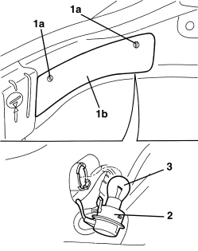

5550C26 REAR DIRECTION INDICATOR BULB (ONE), LEFT OR RIGHT - R.R.
- Path
- Procedures > 55 ELECTRICAL EQUIPMENT > 5550 WARNING AND MANOEUVRING INDICATORS > 5550C DIRECTION INDICATORS/HAZARD WARNING LIGHTS > 5550C26 REAR DIRECTION INDICATOR BULB (ONE), LEFT OR RIGHT - R.R.
- Kind
- repair procedure (removal / refitting; the operation number is the code)
- Applies to
- all engines; all production periods
- Interactive page
- https://sloeber94.github.io/elrnDB-aBrrSpdr/en/#/946002423
Applies to: all engines; all production periods
 Removing
Removing
 Refitting
Refitting- Open the tailgate.
1. Rotate the retainers (1a) and remove the cover (1b).
2. Extract the bulb holder from the housing (bayonet fitting).
3. Remove the bulb from the bulb holder (bayonet fitting).

Applies to: all engines; all production periods
Refitting
Removing- Check that the bulb is not damaged.
- Fit the bulb in the bulb holder (bayonet fitting).
- Fit the bulb holder in place (bayonet fitting).
- Position the cover and secure it using the retainers.
- Close the tailgate.
- Check that the rear lights are working.